先结构，后节奏
把镜头按分镜顺序放上时间线，先定入点和出点。不要一边剪一边调色，也不要一边剪一边找音乐；那会把“结构问题”误当成“氛围问题”。
第一版只问：观众知不知道现在发生了什么？如果不知道，加镜头或删镜头，不要靠转场救。
删三类镜头
第一类，重复：第二个镜头没有带来新信息。第二类，装饰：很好看，但不推动动作。第三类，解释：角色用台词把画面已经说清楚的事再说一遍。
删的时候先标记，不要立刻删除。先把“可能删”的镜头放进废片轨，完整看一遍，再决定。
写 3 条修改清单
每次看完粗剪，只写 3 条，每条带时间点：00:12 观众不知道她为什么走；00:38 反应镜头太长；00:51 结尾没有代价。
不要写“感觉不对”。感觉不对不是问题，具体到哪一秒、哪一个信息缺失，才是可修改的问题。
DIAGRAM / ROUGH CUT
粗剪：先结构，后效果

图片说明：本页封面、图解与步骤图是编辑示意或结构图，不是本页实测照片，也不能当作器材测试证据；AI 辅助生成的图会在图注标出。判断器材或画面，以正文的测试条件与现场记录为准。